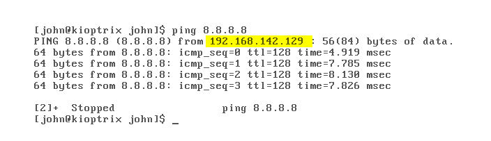

- Will do a little cheating here as the mentor is giving us a user name :
username : john
password : TwoCows2
- As the machine is old so the typical commands does not work (i.e. ifconfig or ipa etc...) so will use ping
to get out IP address here.

- I have used ctrl-alt escto get out from the VM to actual window.
-Now will open another VM to run our kali linux on it to verify the ip address of the kioptrix machine we are running using arp scan.
- Will use an inbuilt scan which is called as arp-scan
command : arp-scan-l
-Now will use a tool called NetDiscover in which will pass the 1st three Octate of our IP address(i.e. 192.168.142)
command: netdiscover -r 192.168.142.0/24where r stands for range.
After the search we are able to detect our machine with an ip address of 192.168.142.129
- To clear the terminal the shortcut is Ctrl + L
- We know the concept of 3 Way Handshake where we used to scan for open port's and connect with them.
SYN SYNACK ACK
- Will do the same thing but with nmap (i.e. Network Mapper)
command: SYM SYNACK ACK nmap -sS
WHICH is called as Stealth scanning as it used to be Stealthy but not anymore.
- But still nmap don't get picked up at 80% of the pentest
- SYN SYNACK RST
Will tell google make a connection and it will reveal us the port that is open than will send the reset flag (i.e. Just kidding don't want to make a connection)
command : nmap -T4 -p- -A 192.168.142.129
where -T4 is the speed preference given by nmap and will use T4 as it's default setting used by the mentor.
-p- means will scan for all the port out there.... But if we use -p it will scan the top 1000 ports for us. We can also specify port like 80,443,53 etc...
-A stands for everything which means it will give us everything that's available out there (i.e OS version , Finger printing etc...)
command : nmap -sU -T4 --top-ports 1000 192.168.142.129
as UDP is connection less so it will take forever to run so will specify to scan only the top 1000 ports in this case.
Mentor told us that there are many scanning options but will mostly use ping sweep (A ping sweep (also known as an ICMP sweep) is a basic network
scanning technique used to determine which of a range of IP addresses map to live hosts (computers). ),
Stealth scanning (Stealth scan types are
those where packet flags cause the target system to respond without having a fully established connection.
) etc for most of the time.
The scanning takes time what we will do in the mean time ?? we can look for the infromation gathering for the juicy data out there.
It our job to look for the information on the OPEN ports and find which are the certain ports to attack first and how to enumerate everything.